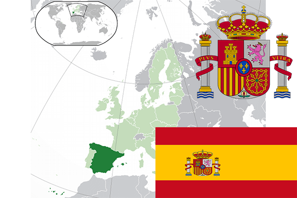

To`liq nomi: Ispaniya Qirolligi
Region: Janubiy G’arbiy Yevropa
Qonunchilik shakli: Parlamentli monarxiya
Mustaqillik kuni: -
Poytaxt: Madrid
Maydoni: 505 990 км²
Chegaradosh davlatlari: Portugaliya, Fransiya, Andorra, Gibraltar
Aholisi: 46 468 102 (2016-yil)
Aholi zichligi: 92 /км²
Aholining o`rtacha yoshi: 83,08 yil
Rasmiy tili: Ispan tili
Dini: Xristian
Pul birligi: Yevro
Telefon prefiksi: +34
Internet domen: .es
Xalqaro tashkilotlarga a`zoligi: BMT, YeI
Dengiz va okeanlarga chiqishi: O’rta Yer dengizi
YIM: Butun: $1,23 trln.(2017-yil) Jon boshiga: $26 486
Yirik shaharlari: Madrid, Barselona, Valensiya, Sevilya, Saragosa.